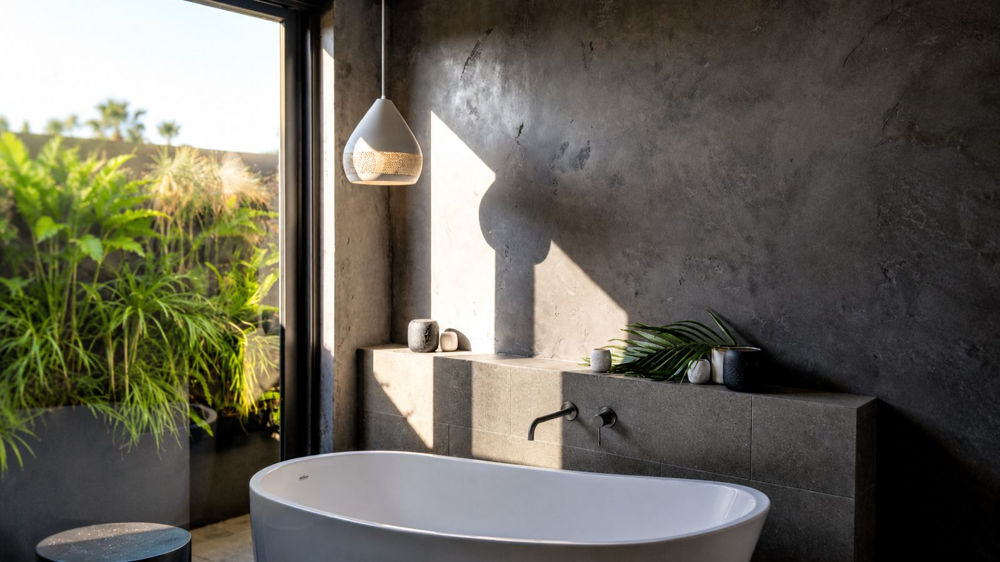

Venetian and polished plaster
Hand-applied Venetian plaster with natural stone and marble textures.

Venetian plaster is a lime-based finish built up in thin, hand-trowelled layers and burnished to a depth and sheen paint cannot copy. Coastside applies it to feature walls, bathrooms, hospitality interiors and high-end homes, on a solid plaster base prepared for it.
What Coastside does
- Substrate preparation or solid plaster base
- Multi-layer hand application
- Burnishing to the agreed sheen
- Sealing or waxing to the specification
Where it is used
- Feature walls and entries
- Bathrooms and ensuites confirm wet areas
- Hospitality and retail interiors
- Luxury residential living areas
Systems
Dulux AcraTex, Rockcote, Unitex, Resene, Boral. We apply the system on your specification. confirm which systems apply to this service
What to plan for
Substrate
Venetian plaster shows every imperfection in the wall under it. The base has to be flat and sound.
Samples
Colour and sheen are best approved on a sample board in the room's light.
Sequencing
Apply after dusty trades are finished. Protect it from joinery installation and trades working close by.
Care
Sealed finishes are cleaned differently from paint. We hand over care instructions confirm.
Venetian plaster case studies
Venetian plaster FAQs
Can Venetian plaster go in a shower?
Service areas
- Venetian plaster on the Gold Coast
- Northern Rivers conditional
Pricing venetian plaster?
Send the plans and the finish schedule. We come back with an itemised price.